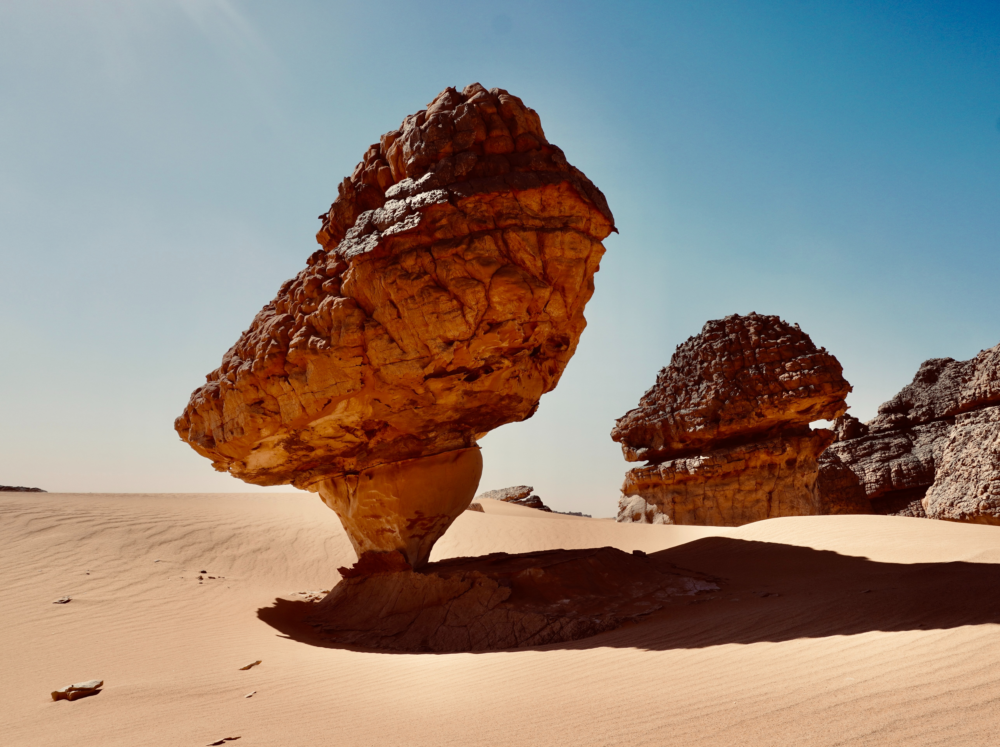

Rock Formation

Photo by Azzedine Rouichi on Unsplash
Description
The creation of a rock formation requires an eon of patience and time. I want to encourage you to not be afraid to try several times to get this recipe right. All rock formations are beautiful and create awe-inspiring landscapes and amazing photo opportunities. Be free to see the beauty in each of the formations cultivated.
This type of recipe may be difficult to envision for the beginner. If you are just starting out, it may be helpful to think of this as a similar cultivation project as for bonsai or rose arches, just scaled much, much larger.
Ingredients
- Erosion
- Erosion "activator" Sand, wind, ice, or a combination of all of these.
- Butte or section of mountain or large rock several times the final desired size
Steps
- Select the starting rock mass.
- Direct chosen activator at sections of the mass to be eroded.
- For a more natural look:Watch and wait.
- For specific designs:Determine the best way to direct the chosen activator. This will highly depend on the site chosen. Some suggestions:
- Series of smaller, more movable rocks to block and direct the activator as desired.
- Tall, sturdy trees used as suggested above. For first-timers, there will definitely be sufficient time for tree growth, if none are currently onsite.
- If there is nearby water sources, convenient volcano, or handy glacier, consider re-directing ice, water or lava to speed up the process. Note: while faster, there will be less time to correct design errors.
- Further design suggestions: Arches and needles
Adapted from: